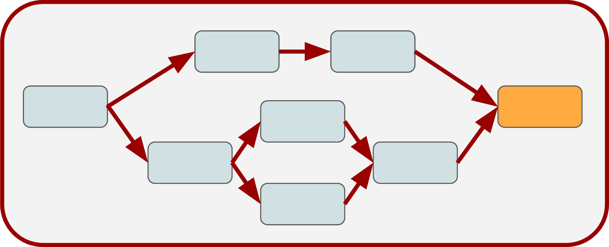

Modern Machine Learning in R
Jakob Richter, Sebastian Fischer, mlr3 Team
mlr3 Ecosystem

Penguins
1
Penguins
- Our goal: Classify penguins into their species: Adelie, Chinstrap, Gentoo
penguins_simpleis a simplified version of the well known palmer penguins dataset
| species | bill_depth | bill_length | body_mass | flipper_length | year | island.Biscoe | island.Dream | island.Torgersen | sex.female | sex.male |
|---|---|---|---|---|---|---|---|---|---|---|
| Adelie | 18.7 | 39.1 | 3750 | 181 | 2007 | 0 | 0 | 1 | 0 | 1 |
| Adelie | 17.4 | 39.5 | 3800 | 186 | 2007 | 0 | 0 | 1 | 1 | 0 |
| Adelie | 18.0 | 40.3 | 3250 | 195 | 2007 | 0 | 0 | 1 | 1 | 0 |
| Adelie | 19.3 | 36.7 | 3450 | 193 | 2007 | 0 | 0 | 1 | 1 | 0 |
| Adelie | 20.6 | 39.3 | 3650 | 190 | 2007 | 0 | 0 | 1 | 0 | 1 |
| Adelie | 17.8 | 38.9 | 3625 | 181 | 2007 | 0 | 0 | 1 | 1 | 0 |
Classifying penguins without mlr3
Rgives you access to many machine learning methods- … but without a unified interface
- things like performance evaluation are cumbersome
vs.
So you want to do ML in R
Creating an mlr3::Task
Tabular data
Features
Target / outcome to predict
- discrete for classification
- continuous for regression
- target determines the machine learning “Task”
<TaskClassif:penguins> (333 x 11)
* Target: species
* Properties: multiclass
* Features (10):
- dbl (7): bill_depth, bill_length, island.Biscoe, island.Dream,
island.Torgersen, sex.female, sex.male
- int (3): body_mass, flipper_length, yearIntermezzo: R6
R6 – All you need to know
mlr3 uses the R6 class system. Some things may seem unusual if you see them for the first time.
- Objects have fields that contain information about the object.
- Objects have methods that are called like functions:
- Methods may change (“mutate”) the object (reference semantics)!
Sugar Functions and Dictionaries
Dictionaries
mlr3offers constructors for all R6 objects:They access
Dictionaryof objects:
| Object | Dictionary | Short Form | Converter |
|---|---|---|---|
Task |
mlr_tasks |
tsk() |
as_task() |
Learner |
mlr_learners |
lrn() |
as_learner() |
Measure |
mlr_measures |
msr() |
as_measure() |
Resampling |
mlr_resamplings |
rsmp() |
as_resampling() |
Dictionaries can get populated by add-on packages (e.g. mlr3learners)
Dictionaries
<DictionaryTask> with 21 stored values
Keys: ames_housing, bike_sharing, boston_housing, breast_cancer,
german_credit, ilpd, iris, kc_housing, moneyball, mtcars, optdigits,
penguins, penguins_simple, pima, ruspini, sonar, spam, titanic,
usarrests, wine, zoo<TaskClassif:penguins> (333 x 11): Simplified Palmer Penguins
* Target: species
* Properties: multiclass
* Features (10):
- dbl (7): bill_depth, bill_length, island.Biscoe, island.Dream,
island.Torgersen, sex.female, sex.male
- int (3): body_mass, flipper_length, yearLearning Algorithms
Availabe mlr3::Learners
as.data.table(<DICTIONARY>)creates a data.table with metadata about objects in dictionaries:- An overview of available objects can also be found on the
mlr3website: https://mlr-org.com - The
Learners are just wrappers around other packages
mlr_learners_table = as.data.table(mlr_learners)
mlr_learners_table[1:10, c("key", "packages", "predict_types")]| key | packages | predict_types |
|---|---|---|
| classif.cv_glmnet | mlr3 , mlr3learners, glmnet | response, prob |
| classif.debug | mlr3 | response, prob |
| classif.featureless | mlr3 | response, prob |
| classif.glmnet | mlr3 , mlr3learners, glmnet | response, prob |
| classif.kknn | mlr3 , mlr3learners, kknn | response, prob |
| classif.lda | mlr3 , mlr3learners, MASS | response, prob |
| classif.log_reg | mlr3 , mlr3learners, stats | response, prob |
| classif.multinom | mlr3 , mlr3learners, nnet | response, prob |
| classif.naive_bayes | mlr3 , mlr3learners, e1071 | response, prob |
| classif.nnet | mlr3 , mlr3learners, nnet | response, prob |
Learning Algorithms
- Get a Learner provided by
mlr3
- Train the
Learner
- The
$modelis the rpart model: a decision tree
n= 333
node), split, n, loss, yval, (yprob)
* denotes terminal node
1) root 333 187 Adelie (0.438438438 0.204204204 0.357357357)
2) flipper_length< 206.5 208 64 Adelie (0.692307692 0.302884615 0.004807692)
4) bill_length< 43.35 145 5 Adelie (0.965517241 0.034482759 0.000000000) *
5) bill_length>=43.35 63 5 Chinstrap (0.063492063 0.920634921 0.015873016) *
3) flipper_length>=206.5 125 7 Gentoo (0.016000000 0.040000000 0.944000000)
6) bill_depth>=17.65 7 2 Chinstrap (0.285714286 0.714285714 0.000000000) *
7) bill_depth< 17.65 118 0 Gentoo (0.000000000 0.000000000 1.000000000) *Learning Algorithms

Prediction
Our scientists have found two new penguins and want to know their species
bill_depth bill_length body_mass flipper_length year island.Biscoe island.Dream island.Torgersen sex.female sex.male 20 37 4000 281 2007 0 1 0 1 0 21 39 3750 190 2006 0 0 1 0 1 To do so, we call the
$predict_newdata()method using the new data:
- We get a Prediction object:
Prediction
- We can make the Learner predict probabilities when we set
predict_type:
Success #1!
We can now classify penguins into their species!
l_rpart = lrn("classif.rpart", predict_type = "prob")
t_penguins = as_task_classif(penguins, target = "species", id = "penguins")
l_rpart$train(t_penguins)
new_penguin = data.frame(
bill_depth = 20, bill_length = 37, body_mass = 4000, flipper_length = 281,
year = 2007, island.Biscoe = 0, island.Dream = 1, island.Torgersen = 0,
sex.female = 1, sex.male = 0
)
l_rpart$predict_newdata(new_penguin) |> as.data.table()| row_ids | truth | response | prob.Adelie | prob.Chinstrap | prob.Gentoo |
|---|---|---|---|---|---|
| 1 | NA | Chinstrap | 0.2857143 | 0.7142857 | 0 |
Performance
Performance Evaluation
- In order to evaluate the performance of our model we need to split our data into a training and a test set
- We train our learner on the train set and make predictions for the test set
learner$train(task, row_ids = split$train)
prediction = learner$predict(task, row_ids = split$test)
prediction<PredictionClassif> for 109 observations:
row_ids truth response prob.Adelie prob.Chinstrap prob.Gentoo
3 Adelie Adelie 0.97894737 0.02105263 0.00000000
4 Adelie Adelie 0.97894737 0.02105263 0.00000000
5 Adelie Adelie 0.97894737 0.02105263 0.00000000
---
325 Chinstrap Chinstrap 0.08695652 0.89130435 0.02173913
328 Chinstrap Chinstrap 0.08695652 0.89130435 0.02173913
329 Chinstrap Gentoo 0.01204819 0.03614458 0.95180723- We can evaluate the prediction using an
mlr3::Measure
Performance Evaluation

Performance Evaluation
- Because our dataset is very small, a simple train-test split is not enough to get a reliable estimate of the generalization error
mlr3supports other resampling methods like k-fold cross-validation
Resampling
Resampling
Resample description: How to split the data
Use the
resample()function for resampling:We get a
ResampleResultobject:
Resample Result
Calculate performance:
Predictions of individual folds
<PredictionClassif> for 111 observations: row_ids truth response prob.Adelie prob.Chinstrap prob.Gentoo 3 Adelie Adelie 0.94392523 0.05607477 0.000000 6 Adelie Adelie 0.94392523 0.05607477 0.000000 11 Adelie Adelie 0.94392523 0.05607477 0.000000 --- 323 Chinstrap Chinstrap 0.00000000 0.96875000 0.031250 329 Chinstrap Gentoo 0.01204819 0.04819277 0.939759 331 Chinstrap Chinstrap 0.00000000 0.96875000 0.031250Score of individual folds
Success #2!
We can now access the performance of our model!
Performance Comparison
We now want to try a glmnet learner from the glmnet package and compare it with the classification tree
We also add a simple baseline learner that predicts the majority class
We create a benchmark design where each row specifies a resample experiment
design = benchmark_grid( tasks = task, learners = list(lrn_rpart, lrn_glmnet, lrn_featureless), resampling = rsmp("cv", folds = 3) ) designtask learner resampling <environment: 0x10622c5f8> <environment: 0x117022e10> <environment: 0x122691b30> <environment: 0x10622c5f8> <environment: 0x115a51a18> <environment: 0x122691b30> <environment: 0x10622c5f8> <environment: 0x12206a550> <environment: 0x122691b30>
Performance Comparison
We can run the benchmark experiment by calling
benchmark()and obtain aBenchmarkResultobject:We can compare the learners by aggregating the results:
task_id learner_id classif.acc penguins classif.rpart 0.9339339 penguins classif.glmnet 0.9969970 penguins classif.featureless 0.4384384 \(\Rightarrow\)
classif.glmnetachieves the highest accuracy
Visualizing Results
- The
mlr3vizpackage containsautoplot)methods for many mlr3 objects

Preprocessing
Earlier, we worked on a simplified version of the penguins dataset
We will now work with the original penguins data that contains missing values and that has categorical columns
<TaskClassif:penguins> (344 x 8): Palmer Penguins * Target: species * Properties: multiclass * Features (7): - int (3): body_mass, flipper_length, year - dbl (2): bill_depth, bill_length - fct (2): island, sexspecies bill_depth bill_length body_mass flipper_length 0 2 2 2 2 island sex year 0 11 0
Preprocessing
While some learners can deal with missing values and categoricals
[1] "importance" "missings" "multiclass" [4] "selected_features" "twoclass" "weights"others cannot:
Within the
mlr3ecosystem, we can assemble machine learning pipelines usingmlr3pipelines
Preprocessing
To use the data with the
lrn("classif.glmnet")we will:- Scale the features
- Handle missing values
- Encode categorical columns
We can do this by combining
PipeOps in aGraph:Graph with 4 PipeOps: ID State sccssors prdcssors scale <<UNTRAINED>> encode encode <<UNTRAINED>> imputemedian scale imputemedian <<UNTRAINED>> classif.glmnet encode classif.glmnet <<UNTRAINED>> imputemedian
Preprocessing
We can convert this
Graphto aGraphLearnerWhile the original glmnet learner fails on the new task
Error: <TaskClassif:penguins> has the following unsupported feature types: factorThe preprocessed learner works
Performance Evaluation on the New Task
Because the GraphLearner is also a Learner, we can evaluate the preprocessed learner just like before
Success #3!
We can now handle missing values and categorical columns for any learner!
l_glment = lrn("classif.glmnet")
l_preproc = po("scale") %>>% po("encode") %>>%
po("imputemedian") %>>% l_glment |> as_learner()
t_penguins = as_task_classif(penguins, target = "species", id = "penguins")
rr = resample(t_penguins, l_preproc, rsmp("cv", folds = 3))
rr$aggregate(msr("classif.acc"))classif.acc
0.993994 What is mlr3pipelines
Machine Learning Workflows:
- Preprocessing: Feature extraction, feature election, missing data imputation, …
- Ensemble methods: Model averaging, model stacking
mlr3: modular model fitting
\(\Rightarrow\) mlr3pipelines: modular ML workflows

Machine Learning Workflows
What do they look like? 
- Buildings block: what is happening? \(\rightarrow\)
PipeOp
- Structure: in what sequence is it happening? \(\rightarrow\)
Graph
\(\Rightarrow\) Graph: PipeOps as nodes with edges (data flow) between them
PipeOps
PipeOp: Single Unit of Data Operation
pip = po("scale")to construct

pip$train(): process data and createpip$state

pip$predict(): process data depending on thepip$state

PipeOps
- Simple data preprocessing operations (scaling, Box Cox, Yeo Johnson, PCA, ICA)
- Missing value imputation (sampling, mean, median, mode, new level, …)
- Feature selection (by name, by type, using filter methods)
- Categorical data encoding (one-hot, treatment, impact)
- Sampling (subsampling for speed, sampling for class balance)
- Ensemble methods on Predictions (weighted average, possibly learned weights)
- Branching (simultaneous branching, alternative branching)
- Combination of data
- Text processing
- Date processing
- Soon: building of neural networks as graphs in
mlr3torch
Preprocessing Pipeline
train()ing: Data propagates and creates$states


Preprocessing Pipeline
train()ing: Data propagates and creates$statespredict()tion: Data propagates, uses$states

Putting it all together
Back to the Penguins Task
Even though we have now already achieved good performance using the
lrn("classif.rpart")learner, we want to see whether we can improve our performance by using a boosting algorithm and tuning its hyperparameters.We have decided to go for XGBoost
Hyperparameters
- Learners have hyperparameters
| id | class | lower | upper | default | storage_type | tags |
|---|---|---|---|---|---|---|
| eta | ParamDbl | 0 | 1 | 0.3 | numeric | train , control |
| gamma | ParamDbl | 0 | Inf | 0 | numeric | train , control |
| max_depth | ParamInt | 0 | Inf | 6 | integer | train , control |
| nrounds | ParamInt | 1 | Inf | <environment: 0x116b3d7f0> | integer | train , hotstart |
- Changing them changes the
Learner’s behavior
Tuning XGBoost
Instead of specifying hyperparameters to a given value we can also mark them for hyperparameter tuning
Wondering which hyperparameters to tune? Check out mlr3tuningspaces!
Because XGBoost does not support factor columns, we add a factor encoding preprocessing step
Tuning XGBoost
Hyperparameter tuning is implemented in the
mlr3tuningpackage:Besides knowing which hyperparameters to tune, we also need to specify:
- The performance measure
- The tuning method
- The termination criterion
- The resampling strategy
Tuning XGBoost
We can tune the classification accuracy using random search with 20 evaluations and 3-fold CV:
instance = tune(
task = task,
learner = lrn_xgb,
measure = msr("classif.acc"),
tuner = tnr("random_search"),
term_evals = 20,
resampling = rsmp("cv", folds = 3)
)
instance$result| classif.xgboost.nrounds | learner_param_vals | x_domain | classif.acc |
|---|---|---|---|
| 4.358877 | one-hot, none , 0.1 , 1 , 0 , 78 | 78 | 0.9912535 |
| classif.xgboost.nrounds | classif.acc | warnings |
|---|---|---|
| 3.925875 | 0.9854310 | 0 |
| 4.224724 | 0.9883549 | 0 |
| 3.759835 | 0.9825070 | 0 |
Tuning XGBoost
We can now train a learner on the full dataset using the optimal configuration
Tuning in mlr3
AutoTuner
We can automate the process of first finding a good parameter configuration and then training the final model using an
AutoTunerLike for the
GraphLearner, this can be used like anymlr3::Learnersuch as evaluating its generalization error usingresample(), resulting in a nested resampling
AutoTuner
Glmnet vs Tuned XGBoost
- We change the
Learner’s IDs:
- We create a benchmark design to compare the tuned XGBoost pipeline with the glmnet pipeline
design = benchmark_grid(
task,
list(lrn_xgb_tuned, lrn_glmnet_preproc),
rsmp("cv", folds = 5))
bmr = benchmark(design)
bmr$aggregate(msr("classif.acc"))| nr | resample_result | task_id | learner_id | resampling_id | iters | classif.acc |
|---|---|---|---|---|---|---|
| 1 | <environment: 0x116f43eb8> | penguins | tuned_xgboost | cv | 5 | 0.9855072 |
| 2 | <environment: 0x116f1b278> | penguins | glmnet | cv | 5 | 0.9941603 |
Glmnet vs Tuned XGBoost

Success #4!
We can now tune hyperparameters automatically!
l_xgb = lrn("classif.xgboost", nrounds = to_tune(10, 100, logscale = TRUE))
l_xgb_pre = po("encode") %>>% l_xgb |> as_learner()
l_xgb_pre_auto = auto_tuner(
learner = l_xgb_pre,
measure = msr("classif.acc"),
tuner = tnr("random_search"),
term_evals = 10,
resampling = rsmp("cv", folds = 3)
)
t_penguins = as_task_classif(penguins, target = "species", id = "penguins")
rr = resample(t_penguins, l_xgb_pre_auto, rsmp("cv", folds = 3))
rr$aggregate(msr("classif.acc"))classif.acc
0.987988 Parallelizing Execution
In real-world cases, hyperparameter tuning and benchmarking is computationally expensive
Fortunately,
mlr3can be conveniently parallelized using thefuturepackageThis allows to parallelize everything that internally calls
resample()orbenchmark()Submission on HPC clusters is supported via the
batchtoolsconnectormlr3batchmark
We have written a book!
Want more?
Resources
We have only shown you a glimpse of what is possible with mlr3!
- Read the
mlr3book: mlr3book.mlr-org.com - Browse our website: mlr-org.com
- Read one of our gallery posts: mlr-org.com/gallery.html
- Check us out on GitHub: github.com/mlr-org
- This presentation: github.com/sebffischer/mlr3_UseR_berlin_2023
Getting In Touch
- You can email us directly: sebastian.fischer@stat.uni-muenchen.de, code@jakob-r.de
- You our publicly available mattermost channel: lmmisld-lmu-stats-slds.srv.mwn.de/mlr_invite/
- We are always looking for new contributors!